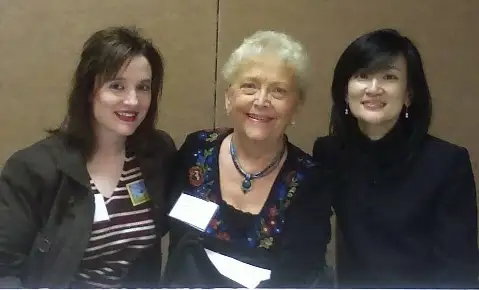
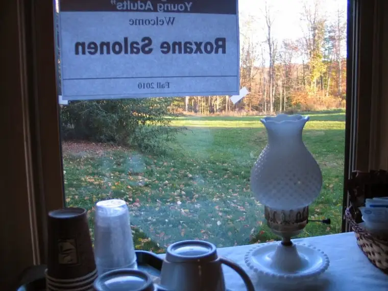

Back in September 2006, I had the pleasure of meeting two very special children’s authors –Joan Hiatt Harlow and Lenore Look.
 |
| Peace Garden Writer (Roxane) with Joan Hiatt Harlow and Lenore Look, 2006 |
{kind=link}
These two lovely ladies had come to my city of Fargo, ND, for a library conference, and we all did presentations and sat together on an author’s panel. We also enjoyed dinner at the same table at the local Olive Garden. (This was the same week I learned my book, “P is for Peace Garden: A North Dakota Alphabet,” had won the Flicker Tale Award!)
During that dinner, I sat next to Lenore, and discovered quickly what a sweet gal she is, aside from being an amazing author. By the end of those couple days, I knew I’d met a new friend, and I’ve enjoyed staying in touch with Lenore through the years. Along with being a friend, she’s been a wonderful writing mentor.
Did you ever meet someone and feel certain it wouldn’t be the last time you’d see them, even though you live many miles apart? That’s how I felt about Lenore.
Fortunately for me, my hunch didn’t lead me astray.
{kind=link}
In 2010, we converged again, this time closer to her neck of the woods of New Jersey at a writer’s conference put on by Highlights at Boyds Mills, PA.
{kind=link}
It was fall, and a most spectacular weekend. I will never forget the colors, the food, and the fellowship we shared together. Here’s all of the gang, including another great friend from Minnesota, Play off the Page’s Mary Aalgaard (front in black coat).
{kind=link}
I love the way life weaves in and out and in again. After that 2010 conference, Lenore has been back to the Boyds Mills site, but on her return visits she’s gone not as conference attendee but instructor.
Rich Wallace, another talented children’s author, had been our conference leader earlier (above photo, back left). Rich and Lenore had worked in a newsroom together in New Jersey early in their writing careers. And I’d like to think I helped bring them back together, since Lenore first learned about that 2010 conference through me. Even more, I’m tickled to learn they’ll be working together again at a session next month at Boyds Mills on the topic of “Writing for Boys.”
Unfortunately, I won’t be there this time. I’ll be right here in North Dakota writing from my little corner of the world, remembering the delicious chance to be in that refreshing, nurturing environment even for just a little while.
 |
| A view from the window of “my” cabin during my 2010 visit to Boyds Mills |
{kind=link}
The grounds have changed since I’ve been there, with many improvements, including a new conference facility known as The Barn (see here).
It’s a magical corner of the world, and Kent Brown has a way of bringing together the most wonderful people. If you’re a writer, and you either write for children or have always wanted to, these conferences are worth a look. If you can make it to the one where Rich and Lenore will be gathered once again, I’ll be a little envious, but I’ll also be deliriously happy for you.
To read up on Lenore’s latest adventures, go to her blog, a globby boogie. (A picture of the cover of her newest Alvin Ho book is featured in her latest post!)
By the way, Boyds Mills/Highlights Foundation has deals for writers who just want to hang out for a day or two and not take in an actual conference, too. There’s something for everything. If you do end up making it to Boyds Mills, drop me a line. I’d love to hear about your adventure!
{kind=link}